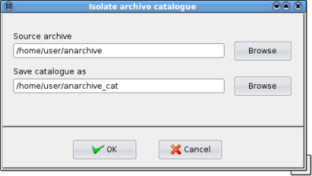

| Prev | Home | Next |
A Dar archive stores information about its files at the end of the archive in a table of contents, or a “catalog”. When creating a differential backup based on an existing “reference” archive, Dar only needs to scan the reference archive's catalog to determine changes in filesystem with respect to the reference archive.
DarGUI can “isolate” or extract the reference catalog into a separate file. The isolated catalog can be read and listed like the full reference archive but it contains none of the actual stored data. Since the isolated catalog is much smaller than the reference archive, you can store it on your filesystem and use it for making differential backups, i.e. use the isolated catalog as your reference archive.
To isolate a catalog select Archive->Isolate Catalog from the main menu. An dialog will appear which allows you to select an archive and the name to be given to the catalog.
Source archive - If an archive is already open then its name will be entered automatically as the "Source archive" but another archive can be selected using the "Browse" button.
Save catalog as - A suggested catalog name is given automatically but different location and name can be selected using the "Browse" button.
You can open the isolated catalog in DarGUI and display the contents. The status field will display [InRef] to indicate that the actual file data is stored in another archive, the "reference archive". To restore the data you have to open the appropriate reference archive.
| Prev | Home | Next |
| Viewing files | Up | Comparing an archive with a filesystem |